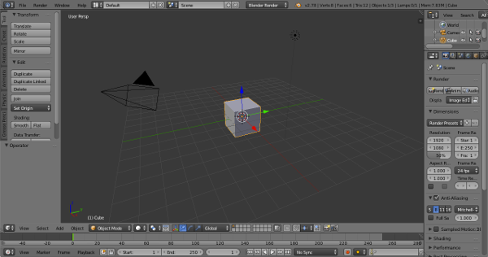
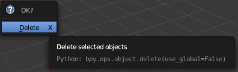
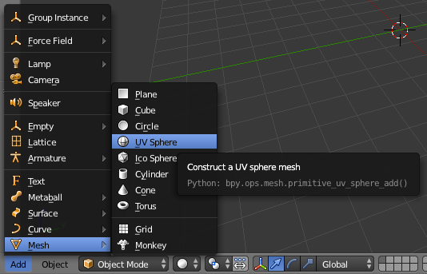
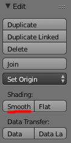
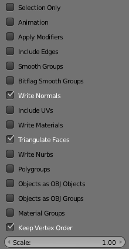

|
The small3d framework
|
|
The small3d framework
|
[Source Code] [API Documentation]
This is a free, open source, minimalistic 3D framework for the programmer who would like to make games using a basic set of libraries (glfw, glm, png, zlib, ogg, vorbis, portaudio, freetype, bzip) and relying on C++ to do the rest. It helps you by providing you with cross-platform rendering functionality based on Vulkan. It can also be compiled with OpenGL.
small3d can render Wavefront models, animate them as frames, map textures on them, provide some basic lighting (Gouraud shading) and also render images and text.
A very easy to use Sound object is also provided that can play OGG files on all supported platforms via a common interface. Basic collision detection has also been implemented.
small3d works on Windows, MacOS, Linux, iOS and Android and supports Visual Studio, Xcode, gcc (even MinGW) and clang for compilation.
All small3d dependencies, apart from the Vulkan SDK, are distributed together with its source code. They can be built by executing a single script (see below).
The instructions and example below describe building and using small3d on a PC (Windows, Linux or MacOS). As far as mobile devices are concerned, the sample game, Avoid the Bug has been ported to both Android and iOS. I use these projects as a basis for mobile development, rather than provide a prebuilt mobile small3d library. They contain the small3d source files (unchanged, I sync back and forth), prebuilt dependencies (vorbis, ogg, freetype etc.) and the required CMakeLists file. The scripts to build the dependencies for mobile devices are provided in the main small3d repository (deps/prepare-android.bat for Android and deps/prepare-ios.sh for iOS). Note that, while with the desktop edition of small3d I use GLFW for windowing functionalities and I/O, on mobile I access the native infrastructure directly.
Before starting, note that the Vulkan SDK and cmake have to be installed on your system and accessible on the command line. On Windows, 7zip also has to be in the path and you also need to install the MinGW compiler or Visual Studio, again with their tools available on the command line.
Run the prepare.bat (Windows MinGW), prepare-vs.bat (Windows Visual Studio) or prepare.sh script from within the deps directory, in order to build the dependencies.
Then, create a directory inside small3d, called build. Then, build like this:
cd build cmake .. cmake --build .
On Windows, you need to execute cmake .. -G"MinGW Makefiles", or with the preferred Visual Studio configuration (e.g. cmake .. -G"Visual Studio 16 2019" -A x64). Make sure that prepare-vs.bat is run with the same configuration (see the parameters at the top, inside the file). Also, make sure to run build under the configuration also defined in prepare-vs.bat parameters, e.g. cmake --build . --config Debug.
If you would rather build small3d with OpenGL rather than Vulkan, also add the definition -DSMALL3D_OPENGL=ON when running cmake ...
The unit tests can be run via the unittests binary from build/bin.
For building your own project, you need the header files from the build/include directory, the libraries from the build/lib directory and the shaders from build/shaders. If you are using cmake, the modules in small3d/cmake can be useful. Check the CMakeLists.txt and src/CMakeLists.txt files for other configuration details (link flags, etc) that may also be required or useful.
Let's move an object around the screen.
We need a Wavefront file. Suppose that it is a model of a ball, called ball.obj. Here's how to make one with Blender (skip the following part if you already have a model ready and go to the Setup section).
When you start Blender, you see a cube:

Press "a" to select it. If the cube is selected already, pressing "a" will de-select it. Press it again in that case. Then "x" to delete the cube. You will be asked to confirm the deletion:

Just press enter to do so. Then, from the menu at the bottom left of the 3D view, select Add > Mesh > UV Sphere:

This will create, as the name implies, a sphere:

With the sphere selected (use the "a" key if it is not), click on the "Smooth" button, under "Shading" on the "Edit" menu on the left of the screen:

This is not important but it will make the sphere look better :)
We now need to create the Wavefront file. From the menu at the top, select File > Export > Wavefront (.obj). We need to set some options on the "Export OBJ" menu on the left. Only select "Write Normals", "Triangulate Faces" and "Keep Vertex Order":

Note: Later, for exporting animations to a series of Wavefront files in a way that will allow small3d to load them, also select "Animation" and "Apply Modifiers".
Save the exported file as "ball.obj".
Let's proceed to make our first program. Create a directory, called ball. Then create another directory within it, called resources and place ball.obj in it. Also add the following code to a CMakeFiles.txt within the ball directory:
cmake_minimum_required(VERSION 3.0.2)
project(ball)
file(COPY "resources" DESTINATION "${PROJECT_BINARY_DIR}/bin")
file(COPY "deps/shaders" DESTINATION "${PROJECT_BINARY_DIR}/bin/resources")
set(CMAKE_RUNTIME_OUTPUT_DIRECTORY "${PROJECT_BINARY_DIR}/bin")
set(CMAKE_MODULE_PATH ${PROJECT_SOURCE_DIR}/cmake)
if(MSVC)
set(CMAKE_RUNTIME_OUTPUT_DIRECTORY_DEBUG "${PROJECT_BINARY_DIR}/bin")
set(CMAKE_RUNTIME_OUTPUT_DIRECTORY_RELEASE "${PROJECT_BINARY_DIR}/bin")
endif(MSVC)
set(DEPS_PATH "${CMAKE_SOURCE_DIR}/deps")
set(CMAKE_PREFIX_PATH ${DEPS_PATH})
if(MSVC)
set(CMAKE_CXX_FLAGS_RELEASE "${CMAKE_CXX_FLAGS_RELEASE} /MT")
set(CMAKE_CXX_FLAGS_DEBUG "${CMAKE_CXX_FLAGS_DEBUG} /MTd")
elseif(WIN32)
set(CMAKE_CXX_FLAGS "${CMAKE_CXX_FLAGS} -std=gnu++11")
set(CMAKE_EXE_LINKER_FLAGS "-static-libgcc -static-libstdc++ -static")
elseif(APPLE)
set(CMAKE_CXX_FLAGS "${CMAKE_CXX_FLAGS} -std=c++11 -stdlib=libc++")
elseif(UNIX)
set(CMAKE_CXX_FLAGS "${CMAKE_CXX_FLAGS} -std=c++11")
endif(MSVC)
find_package(Vulkan REQUIRED) # Delete for OpenGL
# Uncomment for OpenGL:
# find_package(OpenGL REQUIRED)
# find_package(GLEW REQUIRED)
find_package(GLFW REQUIRED)
find_package(PNG REQUIRED)
find_package(GLM)
find_package(OGG REQUIRED)
find_package(VORBIS REQUIRED)
find_package(Portaudio REQUIRED)
find_package(Freetype REQUIRED)
find_package(SMALL3D REQUIRED)
if(UNIX)
find_package(BZip2 REQUIRED)
endif(UNIX)
subdirs(src)
Create a directory called src within the ball directory and, inside it, another CMakeLists.txt file:
add_executable(ball main.cpp)
target_include_directories(ball PUBLIC "${CMAKE_SOURCE_DIR}/include")
target_include_directories(ball PUBLIC
${SMALL3D_INCLUDE_DIR}
${GLFW_INCLUDE_DIRS}
${Vulkan_INCLUDE_DIR} # Replace with ${OPENGL_INCLUDE_DIR} for OpenGL
${PNG_INCLUDE_DIRS}
${GLM_INCLUDE_DIRS}
${OGG_INCLUDE_DIRS}
${VORBIS_INCLUDE_DIR}
${PORTAUDIO_INCLUDE_DIRS}
${FREETYPE_INCLUDE_DIRS}
)
target_link_libraries(ball PUBLIC
${SMALL3D_LIBRARY}
# Uncomment for OpenGL
# ${GLEW_LIBRARIES} and
# ${OPENGL_LIBRARIES}
${GLFW_LIBRARIES}
${Vulkan_LIBRARIES} # Remove for OpenGL
${PNG_LIBRARIES}
${VORBIS_LIBRARIES}
${OGG_LIBRARIES}
${PORTAUDIO_LIBRARIES}
${FREETYPE_LIBRARIES}
)
if(UNIX)
target_include_directories(ball PUBLIC
${BZIP2_INCLUDE_DIRS})
target_link_libraries(ball PUBLIC
${BZIP2_LIBRARIES})
endif(UNIX)
if(WIN32)
target_link_libraries(ball PUBLIC winmm)
endif(WIN32)
if(APPLE)
set_target_properties(ball PROPERTIES LINK_FLAGS "-framework \
AudioUnit -framework AudioToolbox -framework CoreAudio -framework Cocoa \
-framework IOKit -framework CoreVideo")
endif(APPLE)
if(MSVC)
set_target_properties(ball PROPERTIES LINK_FLAGS_DEBUG
"-NODEFAULTLIB:LIBCMTD")
set_target_properties(ball PROPERTIES LINK_FLAGS_RELEASE
"-NODEFAULTLIB:LIBCMT")
set_target_properties(ball PROPERTIES VS_DEBUGGER_WORKING_DIRECTORY
"${small3d_BINARY_DIR}/bin")
endif(MSVC)
Inside ball/src, create the main.cpp file:
int main(int argc, char **argv) {
return 0;
}
Include small3d's Renderer and SceneObject classes:
#include <small3d/Renderer.hpp> #include <small3d/SceneObject.hpp>
Now we need the GLFW header files:
#include <GLFW/glfw3.h>
We also need to be using the small3d namespace, so this goes under our include statements:
using namespace small3d;
We also need to write the logic that will be detecting key presses:
bool downkey, leftkey, rightkey, upkey, esckey;
void keyCallback(GLFWwindow* window, int key, int scancode, int action,
int mods)
{
if (key == GLFW_KEY_DOWN && action == GLFW_PRESS)
downkey = true;
if (key == GLFW_KEY_UP && action == GLFW_PRESS)
upkey = true;
if (key == GLFW_KEY_LEFT && action == GLFW_PRESS)
leftkey = true;
if (key == GLFW_KEY_RIGHT && action == GLFW_PRESS)
rightkey = true;
if (key == GLFW_KEY_ESCAPE && action == GLFW_PRESS)
esckey = true;
if (key == GLFW_KEY_DOWN && action == GLFW_RELEASE)
downkey = false;
if (key == GLFW_KEY_UP && action == GLFW_RELEASE)
upkey = false;
if (key == GLFW_KEY_LEFT && action == GLFW_RELEASE)
leftkey = false;
if (key == GLFW_KEY_RIGHT && action == GLFW_RELEASE)
rightkey = false;
if (key == GLFW_KEY_ESCAPE && action == GLFW_RELEASE)
esckey = false;
}
And finally, we go to the main program, and we create the renderer. The renderer is a singleton, so it can only be retrieved via the getInstance method, and assigned to a pointer:
Renderer *renderer = &Renderer::getInstance("Ball demo");
We will later need to access the window of the application, in order to pick up key events:
GLFWwindow* window = renderer->getWindow();
We create the ball:
SceneObject ball("ball", "resources/ball.obj");
small3d uses vectors a lot as parameters for convenience. When positioning the ball, the components are in order, x (-left, +right), y(+up, -down), and z(-away from the camera, +towards the camera):
ball.offset = glm::vec3(0.0f, -1.0f, -8.0f);
So let's start our main loop now. small3d uses GLFW and you can use it too! First we need to declare the callback function, which will be the keyCallback method we wrote above.
glfwSetKeyCallback(window, keyCallback);
Now in every iteration, we need to check whether we want to exit the program. Let's say that we'll be doing that with the Esc key:
while (!glfwWindowShouldClose(window) && !esckey) {
glfwPollEvents();
if (esckey)
break;
If after that we are still in the loop (so, no Esc key pressed), we will want to move the ball around with the keyboard.
We will have the up arrow move the ball away from the camera. Down will do the opposite. Guess what left and right will do :)
if (upkey) ball.offset.z -= 0.1f; else if (downkey) ball.offset.z += 0.1f; else if (leftkey) ball.offset.x -= 0.1f; else if (rightkey) ball.offset.x += 0.1f;
Ok, the ball is positioned. Now we need to actually draw it. We clear the screen first:
renderer->clearScreen();
Then we render the ball. The second parameter is the colour. Let's say it's yellow (the vector below symbolises an rgb colour, together with the alpha channel):
renderer->render(ball, glm::vec4(1.0f, 1.0f, 0.0f, 1.0f));
We are using a double-buffered system (we draw on one buffer, while the user is looking at the other one), so we also need to swap the buffers:
renderer->swapBuffers();
And we close the loop :)
}
That's it!
Let's try it out. Create a ball/deps directory and from the built small3d framework (see Building section above) copy the build/include, build/lib and build/shaders directories to this deps directory. Also, copy the cmake directory from the root of the small3d framework repository to the root ball directory. Then, back from the root ball directory execute:
mkdir build cd build cmake .. cmake --build . cd bin ./ball
On Windows, you need to execute cmake .. -G"MinGW Makefiles", or with the preferred Visual Studio configuration (e.g. cmake .. -G"Visual Studio 16 2019" -A x64).
Note that you have to be inside the build/bin directory in order to execute the program, otherwise it will not find the necessary resource files (shaders, textures, etc).
There's our ball:

Try moving it around with the arrows. A good way to learn about the other features of small3d is to read the documentation (in docs) and also to explore the source code of the sample games.
The framework supports collision detection via manually created bounding boxes. In order to create these in Blender for example, just place them in the preferred position over the model. Ideally, they should be aligned with the axes, (but note that small3d does more than just a simple axis-aligned bounding box collision detection).

Export the bounding boxes to a Wavefront file separately from the model. You can do this if you "save as" a new file after placing the boxes and deleting the original model. During export, only set the options Apply Modifiers, Include Edges (but not in newer versions of Blender, where it is not available), Objects as OBJ Objects and Keep Vertex Order. On the contrary to what is the case when exporting the model itself, more than one bounding box objects can be exported to the same Wavefront file.
It is good to keep the default origin in Blender for the models as well as the bounding boxes. User-set origins are ignored by Blender when exporting Wavefront files. That can cause misalignments between bounding boxes and models, even if the origins of both have been properly set to a new position.